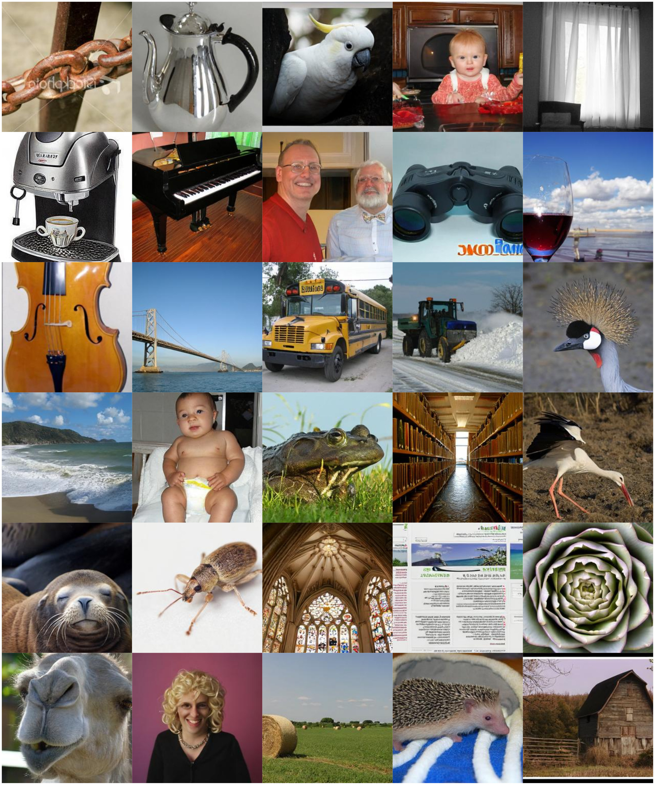
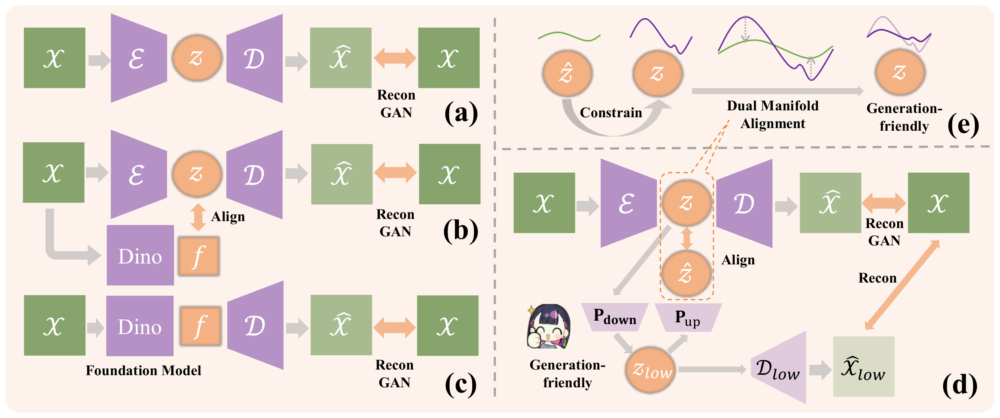
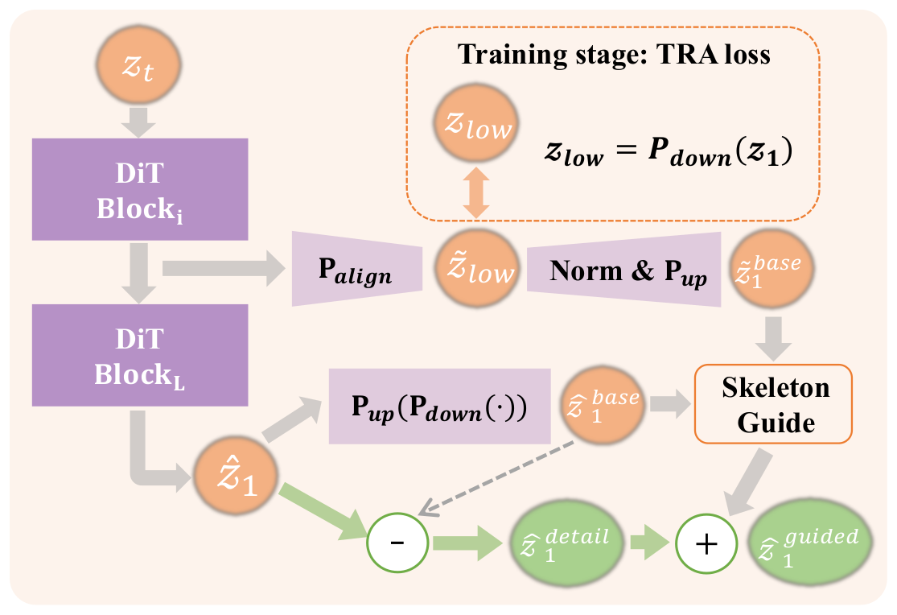

Generation Gallery


A foundation-model-free VAE: a smooth low-dimensional skeleton regularizes the high-dimensional latent from within.

In latent diffusion models, expanding the latent dimension of variational autoencoders (VAEs) is essential to push the upper bound of reconstruction quality. However, without explicit structural constraints, such unregularized expansion easily yields a rugged and ill-conditioned latent manifold, causing generated latents to drift off the manifold during generation (i.e., off-manifold problem). Recent works smooth this manifold by using external foundation models (e.g., DINOv2) as a topological regularizer. However, we argue that tying the latent space to frozen external priors inherently restricts generalization: bound by their pre-training distributions and semantic biases, they may fail to capture faithful visual details on out-of-distribution domains. Observing that low-dimensional latents naturally form a smoother, generation-friendly manifold, we propose dual-manifold VAE (DM-VAE) to leverage internal representations as a topological regularizer. Specifically, DM-VAE pairs a high-dimensional reconstructive branch with a low-dimensional branch that extracts a clean topological skeleton, anchoring the high-dimensional manifold to this smooth subspace. Building upon this framework, we further introduce topological representation alignment (TRA) to supervise intermediate generator features during training, and internal guidance with topological skeleton ($\text{IG}_{\text{TS}}$) to guide structural components while preserving high-frequency details at inference. On ImageNet-1K ($256\times256$), our foundation-model-free DM-VAE achieves a state-of-the-art rFID of 0.12 and a generation $\text{FID}_{50\text{K}}$ of 1.28 (w/o CFG) and 1.20 (w/ CFG), and further reaches 1.11 when orthogonally combined with DINOv2.

Expanding channel capacity $C$ exponentially lowers the reconstruction distortion bound $\epsilon_{\text{recon}} \ge \alpha \exp(-\gamma \cdot C)$, yet embedding an intrinsically $d$-dimensional image manifold into $\mathbb{R}^{C\times H\times W}$ introduces exploding codimension $c = CHW - d$, scattering high-frequency energy across normal directions.
DM-VAE decomposes $z = z^{\text{base}} + z^{\text{detail}}$ via orthogonal $1\times 1$ projections ($\mathcal{P}_{\text{down}}, \mathcal{P}_{\text{up}}$), supervising $z_{\text{low}}$ solely with $\mathcal{L}_{\text{rec}}$ (without GAN loss) while minimizing $\mathcal{L}_{\text{DM}} = \mathbb{E}_x[\|z - \hat{z}\|_2^2]$. This concentrates $\mathcal{M}_Z$ within a narrow tubular neighborhood around smooth $\mathcal{M}_{\text{base}}$ ($|\cos(z^{\text{base}}, z^{\text{detail}})| = 0.0047$) and decouples temporal SNR transition windows ($t_{\text{base}}^* = 0.43$ vs. $t_{\text{detail}}^* = 0.91$).

Training (TRA): Intermediate DiT hidden features $h_t$ are mapped via $\mathcal{P}_{\text{align}}$ to $\tilde{z}_{\text{low}}$ and aligned with the clean skeleton $z_{\text{low}} = \mathcal{P}_{\text{down}}(z_1)$ via cosine similarity $\mathcal{L}_{\text{TRA}}$, establishing early structural velocity priors free from high-frequency gradient variance.
Inference ($\text{IG}_{\text{TS}}$): Within a single forward pass (zero doubled-NFE overhead), $\text{IG}_{\text{TS}}$ separates $\hat{z}_1 = \hat{z}_1^{\text{base}} + \hat{z}_1^{\text{detail}}$, guides only the skeleton with norm-calibrated $\tilde{z}_1^{\text{base}}$, and adds unperturbed $\hat{z}_1^{\text{detail}}$ back: $$\hat{z}_1^{\text{guided}} = \hat{z}_1^{\text{base}} + (\omega - 1)(\hat{z}_1^{\text{base}} - \tilde{z}_1^{\text{base}}) + \hat{z}_1^{\text{detail}}$$


| Method | In-Domain rFID↓ | PSNR↑ | OOD rFID↓ | OOD PSNR↑ |
|---|---|---|---|---|
| RAE | 0.57 | 19.20 | 9.85 | 17.53 |
| RAEv2 | 0.31 | 23.29 | 5.09 | 22.20 |
| MAE-VAE (f16d32) | 0.28 | 28.33 | 2.38 | 29.78 |
| VA-VAE (f16d32) | 0.28 | 27.96 | 2.05 | 29.33 |
| SD-VAE (f16d32) | 0.26 | 28.59 | 2.08 | 30.19 |
| DM-VAE (f16d32, Ours) | 0.21 | 28.50 | 1.93 | 30.30 |
| DM-VAE (f16d64, Ours) | 0.12 | 30.76 | 1.12 | 32.87 |
| Method | Epochs | #Params | w/o CFG | w/ CFG | ||||
|---|---|---|---|---|---|---|---|---|
| FID50K↓ | sFID↓ | IS↑ | FID50K↓ | sFID↓ | IS↑ | |||
| Latent Diffusion with External Self-Supervised Representation Models | ||||||||
| REPA | 800 | 675M | 5.90 | 5.69 | 157.8 | 1.42 | 4.70 | 305.7 |
| REG | 480 | 677M | 2.20 | 4.67 | 219.1 | 1.40 | 4.24 | 296.9 |
| VA-VAE (LightningDiT) | 800 | 675M | 2.17 | 4.36 | 205.6 | 1.35 | 4.15 | 295.3 |
| RAE (DiTDH) | 800 | 839M | 1.60 | 5.40 | 242.7 | 1.28 | 4.72 | 262.9 |
| REPA-E | 800 | 675M | 1.83 | 4.17 | 217.3 | 1.26 | 4.11 | 314.9 |
| DDT-XL | 400 | 675M | 6.27 | – | 154.7 | 1.26 | – | 310.6 |
| IG (VA-VAE) | 680 | 675M | 1.34 | 3.94 | 229.3 | 1.19 | 4.11 | 269.0 |
| DiT-XL (DM-VAEDino, f16d32) | 60 | 675M | 2.26 | 4.81 | 200.3 | 1.36 | 4.12 | 276.3 |
| DiT-XL (DM-VAEDino, f16d32) | 400 | 675M | 1.29 | 4.28 | 253.3 | 1.11 | 4.03 | 297.4 |
| Foundation-Model-Free Latent Diffusion (No External Self-Supervised Priors) | ||||||||
| DiT-XL/2 | 1400 | 675M | 9.62 | 6.85 | 121.5 | 2.27 | 4.60 | 278.2 |
| MaskDiT | 1600 | 675M | 5.69 | 10.34 | 177.9 | 2.28 | 5.67 | 276.6 |
| SiT-XL/2 | 1400 | 675M | 8.61 | 6.32 | 131.7 | 2.06 | 4.50 | 270.3 |
| TREAD | 740 | 675M | – | – | – | 1.69 | 4.73 | 292.7 |
| MDTv2-XL/2 | 1080 | 675M | – | – | – | 1.58 | 4.52 | 314.7 |
| DiT-XL (DM-VAE, f16d32) | 64 | 675M | 2.62 | 4.62 | 190.1 | 1.67 | 4.12 | 253.4 |
| DiT-XL (DM-VAE, f16d32) | 400 | 675M | 1.25 | 4.16 | 250.8 | 1.17 | 4.02 | 283.0 |
| DiT-XL (DM-VAE, f16d64) | 400 | 675M | 1.28 | 4.16 | 245.7 | 1.20 | 4.10 | 274.8 |
@article{chen2026dmvae,
title = {Dual-Manifold Variational Autoencoders},
author = {Chen, Hongxu and Wang, Chun and Wang, Yanghao and Li, Hongxiang and Wang, Zhen and Zhang, Zhixiang and Chen, Long},
journal = {arXiv preprint},
year = {2026}
}